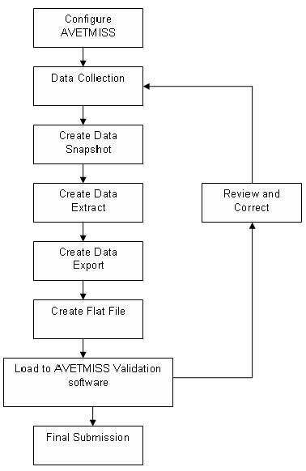
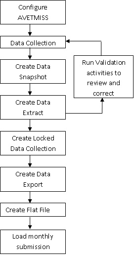

Overview
The Australian Vocational Education and Training Management Information Statistical Standard (AVETMISS) Reporting Use provides information on procedures, file details, processes, system parameters, seed data, and so on, for producing reports required for compliance with AVETMISS and Victorian VET Student Statistical Collection guidelines.
This document also provides information on the pages, procedures, processes, system parameters, functions and seed data for storing a student's Unique Student Identifier (USI) and interacting with the USI Registry.
Unique Student Identifier
Banner AVETMISS is capable of supporting requirements for the creation and verification of Unique Student Identifiers (USIs). It includes functionality to store and display the USI and to interact with the USI Registry through web services.
- Apply for a USI on behalf of a student in real time.
- Apply for USIs on behalf of students in bulk.
- Verify that the USI provided by a student is valid.
- Verify student-provided USIs in bulk
- Obtain all mandatory data elements required for a USI request.
- Indicate that document verification is not needed if the institution has DVS Override permission.
- Indicate if a student is exempt from requiring a USI.
- Include the USI in the NAT00080 file for AVETMISS reporting.
- Manage the authentication credentials required to access USI system.
- Vary the batch limit of the bulk USI requests.
AVETMISS reporting system
Banner AVETMISS is capable of supporting reporting requirements for both the National Centre for Vocational Education and Research (NCVER) AVETMISS specification (the National Collection) and the Victorian Department of Education and Early Childhood Development sub-specification of the AVETMISS standard.
NCVER receives data from VET providers through a series of collections, which are submitted using the AVETMISS Validation Software (AVS). Institutions may use Banner AVETMISS to prepare files for validation and submission through AVS.
For the AVETMISS National Collection, Banner AVETMISS supports the submission of the following data.
AVETMISS VET Provider Collection
The following is the list of AVETMISS VET Provider Collection.
- Submission to Managing Agent (NAT00005)
- Training Organisation (NAT00010)
- Training Organisation Delivery Location (NAT00020)
- Course (NAT00030)
- Module/Unit of Competency (NAT00060)
- Client (NAT00080)
- Client Postal Details (NAT00085)
- Disability (NAT00090)
- Prior Educational Achievement (NAT00100)
- Enrolment (NAT00120)
- Qualification Completed (NAT00130)
AVETMISS Apprentice and Trainee Collection
- Submission to Managing Agent (APP00005)
- Registered Training Organisation (APP00010)
- Qualification (APP00030)
- Client (APP00080)
- Prior Educational Achievement (APP00100)
- Training Contract Transaction (APP00150)
- Employer (APP00160)
The process tree for the Banner AVETMISS reporting system includes MDUU activities to facilitate the submission of file variations for NSW and QLD state reporting.
Victorian VET reporting system
The Victorian VET reporting process requires Registered Training Organisations (RTOs) to send a set of files to the Victorian Department of Education and Early Childhood every month.
Those files are updated monthly, and it is envisaged that users will run monthly snapshots, extracts and collections of data. Data from collector tables can be exported and formatted into the Victorian VET flat file format, and submitted each month.
As part of the monthly reporting requirement, the Victorian Department of Education and Early Childhood requires RTOs to monitor previously reported enrolment data and correct it if there are errors or changes.
Banner AVETMISS provides functionality to lock collector table data so that institutions will always report the latest data each month but will also retain a history of the actual data reported for any given month.
- Training Organisation (NAT00010) File
- Training Organisation Delivery Location (NAT00020) File
- Course (NAT00030) File
- Module/Unit of Competency (NAT00060) File
- Client (NAT00080) File
- Client Postal Details (NAT00085) File
- Client Disability (NAT00090) File
- Client Prior Educational Achievement (NAT00100) File
- Enrolment (NAT00120) File
- Qualification Completed (NAT00130) File
Victorian RTO Interface
Ellucian Banner Systems is used to record an enrolment of a student, including apprentice and trainee information. Contracts of training for apprentices and trainees are registered with the Office of Training and Tertiary Education and are administered through the Epsilon system. The Epsilon System is the administrative system for recording the details of the arrangements between an employer and employee.
Ellucian’s solution provides the Web API for RTO to retrieve training contracts data and update status of a training contract to Completed.
The Banner solution is designed to support the following:
- GET method: Provides a read-only access to a resource. This method allows the authenticated RTO account to fetch training contracts data
- Import process: Imports the contract details downloaded using the GET method from the GET table (SORTCND) into the Banner table for Training Contracts (SKRTCND) in Banner.
- PUT method: Updates an existing resource. This method allows the authenticated RTO account to update a training contract status to Completed
- PURGE Method: Cleans up the data fetched using the GET method
API invocation job
To invoke the API job, Ellucian recommends configuring the AVETMISS portal. To do this, use the AVETMISS window in the SKASYSC page. The Student Overall Base AVETMISS Reporting (SOBARPT) table stores the value that you enter in the AVETMISS window of the SKASYSC page.
File mapping
The AVETMISS fields are cross-mapped with the Banner pages and fields that they source data. The mapping happens when users perform the import method.
| AVETMISS fields | Banner Field Name |
|---|---|
| ANPDetails: hsd_epsilonidentifier | SKATCND > ANP ID |
| hsd_legalname | SKATCND > ANP Legal Name |
| TrainingContractDetails: hsd_epsilonidentifier | SKATCND > Contract ID |
| hsd_determinationcode | SKATCND > Determination Code |
| hsd_determinationname | SKATCND > Determination Name |
| Trainee Details:hsd_epsilonidentifier | SKATCND > External Student ID |
| hsd_previoustrainingcontract | SKATCND > Previous Training Contract |
| hsd_probationperiod | SKATCND > Probation Period |
| hsd_code | SKATCND > National Qualification Code |
| hsd_deltacode | SKATCND > Delta Code |
| hsd_qualificationname | SKATCND > National Qualification Name |
| hsd_version | SKATCND > National Qualification Version |
| hsd_commencementdate | SKATCND > Contract Start date |
| hsd_nominalcompletiondate | SKATCND > Nominal Completion Date |
| hsd_trainingorganisationid | SKATCND > TOID |
| hsd_SchoolName | SKATCND > School Name |
| hsd_schemetype | SKATCND > Scheme Type |
| hsd_terminationdate | SKATCND > Contract Termination Date |
| hsd_trainingcontractstatus | SKATCND > Contract Status |
| hsd_statuschanged | SKATCND > Contract Status Date |
Invoke AVETMISS APIs (SOPARPT) process
The SOPARPT job process is available in the GJAPCTL process to invoke the APIs for AVETMISS.
GET method
The GET method retrieves records from AVETMISS into the GET table (SORTCND). GET works with or without the optional parameters, that is, the start date and end date. If parameters are not used, the GET method fetches all the records from AVETMISS. If the start date and end date are used, the GET method fetches records for the duration specified.
The SORTCND table is the interim table (GET table) for downloading the response from AVETMISS to Banner. After invoking the GET method and getting a successful response, based on the conditions, the GET method responses are downloaded to the SORTCND table. Further, when the institutions invoke the Import functionality, the system downloads the records from the SORTCND table to the Banner table for Training Contracts (SKRTCND).
Invoking the GET method happens when the institutions initiate the GET method from the SOPARPT job in GJAPCTL process. System fetches the access token and uses the access token generated to make a GET method call.
During the GET method, the system first checks for a record with a matching contract in Banner using the Contract ID. If there is a matching contract in Banner, the system downloads the record to SORTCND table. Institutions can view the record in the SOAUREV page to see if there is a data mismatch between the record in AVETMISS and the record in Banner.
If there is no matching contract ID in Banner, the system tries to find a matching External ID coming from AVETMISS to the one in Banner. External ID is the ID given for a student in the External system. If a matching External ID is found, the ID is used to find the corresponding student from Banner. During the import process, the contract is created in Banner for the student.
If the matching contract or external ID is not found in Banner, the system tries to find a matching USI coming from AVETMISS to that in Banner. If a matching USI is found, it will be used to find the corresponding student in Banner. During the Import process, the contract is created in Banner for the student.
If the matching contract or external ID or USI is not found in Banner, the system tries to find a matching student using the combinations of First Name, Last Name, DOB, Gender, and Email coming from AVETMISS to the one in Banner. If a matching student is found, during the import process, the contract is created in Banner for the student.
Import process
Download the records to Banner (from the SORTCND table) to the SKRTCND table.
Import process creates a new contract for the student in Banner using the response from AVETMISS. For the import process to work, the Selected indicator for the record in the SORTCND table should be set to Y and the Processed indicator should be set to N. Users can update the Selected indicator to Y for the record from the SOAUREV page. Users cannot modify the Processed indicator.
PUT method
PUT method updates the status of a completed record in Banner as Completed in AVETMISS. When the record is marked as Completed in Banner, the institutions can initiate the PUT API call.
The available options to initiate the PUT API call are:
- Set the real time parameter as Y in SKARSYS (AVETMISS_REAL_TIME parameter), which invokes the API call for the record that is updated from the page as Completed
- Set the real time parameter as N, which does not invoke the API call from the page
In the SOPARPT job, institutions can invoke the PUT method for the completed contracts, with or without selecting the student ID.
If the institutions select the student ID, the PUT is performed for all the Completed contracts in Banner with the Pending/Failed API status for the selected student ID. If the institutions do not select the student ID, the PUT is performed for all the completed contracts in Banner with the Pending/Failed API status for all the students.
PURGE method
The PURGE method deletes the set of data from the SORTCND table. The data is deleted with the contracts having nominal completion date on or before the nominal completion date selected in the SOPARPT job process. Nominal completion date is a mandatory parameter for the PURGE method.
AVETMISS integration
Details on the methods and options for the AVETMISS integration.
| API Method / Process | Option | Description |
|---|---|---|
| GET | N/A | Fetches all the training contract records from AVETMISS. |
| GET | (Optional) With start date and end date | Fetches the training contract records from AVETMISS for the specified start date and end date duration. |
| Import | N/A | Imports record from the SORTCND table to Banner table for contract (SKRTCND). There are no parameters included for this method. |
| PUT | N/A | Updates the status of a contract in AVETMISS as Completed, if the record is marked as Completed in Banner for all students. |
| PUT | (Optional) With Student ID | Updates the status of a contract in AVETMISS as Completed if the record is marked as Completed in Banner for the selected student. |
| PURGE | (Mandatory) Nominal Completion date | Deletes the contracts from the SORTCND table having nominal completion date on or before the nominal completion date selected by the institution. |
Invoke the APIs for AVETMISS using the SOPARPT process
You can invoke the APIs for AVETMISS using the SOPARPT process.
Procedure
AVETMISS functions and features
The Banner AVETMISS module supports the capture and processing of the data required for the production of AVETMISS compliant returns for the AVETMISS VET Provider Collection, the AVETMISS Apprentice and Trainee Collection, additional fields for NSW AVETMISS-Compliant reporting, additional fields for QLD AVETMISS-Compliant reporting, and the Victorian VET Student Statistical Collection.
The module draws information from Banner Student tables and pages, and tables and pages added specifically for AVETMISS functionality.
Refer to Victorian VET Reporting System to read more information about the Victorian VET reporting process functionality.
- Set up the AVETMISS Module: Procedures and pages are used to define elements, values, and processes that are required to produce the file submissions.
- Collect and Record Data: Supplemental procedures and pages are used to enter and review any data required for AVETMISS compliance that might not have already been entered elsewhere in Banner.
- Create the Return: Extract and Report Generation procedures and pages are used to create and view the data snapshot and extract. This step has three stages: snapshot process, extract process, and export process.
- View Data: The Process Rules Engine Universal Viewer is used to view the data produced by the snapshot and extract processes.
This section discusses the following topics.
Reporting data elements
The reporting requirements of Australian vocational education providers include data elements that have no logical equivalent in Banner. Additional fields are needed for programs, degrees, courses, campuses, students, and staff. Each of these data elements used to comply with the reporting requirements needs to meet specific validations.
The activities required to produce the AVETMISS files are described in the Procedures section.
Seed data and system parameters
A set of default system parameters and seed data is delivered with the AVETMISS module.
These parameters are used to configure the AVETMISS system. Use the Report System Parameters (SKARSYS) page to configure the system parameters data to the specifics of your implementation. Appropriate permissions are required to modify these pages.
Refer to the Seed Data section for details on seed data and system parameters that are available for the AVETMISS module.
Processing data collection
The AVETMISS module uses rule sets in the Mass Data Update Utility (MDUU) to generate the snapshot, extract, and export files for the return. We have delivered seed data to enable you to begin designing your return process.
To understand how the returns are built, you must understand the process, task, and activity elements of Banner MDUU. Refer to the Banner Mass Data Update Utility Use for a complete explanation of tasks and activities, and how these elements work to support AVETMISS reporting requirements.
- Process: This represents a set of tasks sharing a common business area. Banner MDUU security allows you to associate users and user classes to a given process. If this functionality is activated, only users assigned to a given process will be able to execute this process
- Task: This is a set of activities that is carried out as part of a process, such as taking a snapshot of data from the original data sources and gathering them in more synthetic tables.
- Activity: This is a processing element that is carried out as part of a task, such as a data copy, or a data transformation. An activity updates a single table and can be reused in several tasks.
The typical top-level process flow for AVETMISS reporting is shown in this section. Details about the snapshot, extract, and export processing items are also provided in this section.

Snapshot processing
This process populates snapshot data from baseline tables, ASC tables, locally developed tables, and tables from third-party applications.
The process allows selected target tables in the snapshot data structure to be populated. It has the capability to refresh (remove and insert) or update (add new rows and update existing rows) into the snapshot.
The structure of the snapshot tables is maintained by Banner MDUU under a schema called MDUUREP. (Refer to the Banner Mass Data Update Utility Use for more information.)
When running the snapshot, you can select which snapshot tables to populate. You can also purge the selected snapshot tables before re-inserting rows.
- Create snapshot data
- Define the column mappings for the snapshot
- Define the rules to generate the snapshot population
- Initialize the snapshot
- Populate the snapshot
- Increment the snapshot (add or remove records without refreshing the snapshot from scratch)
Extract processing
This process populates the extract based on snapshot data and, where necessary, it transforms the snapshot data into the format needed for the extract.
The process allows selected target tables in the extract data structure to be populated. It has the capability to refresh (remove and insert) or update (add new rows and update existing rows) into the extract.
- Create extract data
- Define the column mappings for the extract
- Define the rules to generate the extract population
- Use expressions and functions to derive values based on the contents of the snapshot
- Initialize the extract
- Populate the extract
- Increment the extract (add or remove records without refreshing the cohort from scratch)
Export processing
This process populates the export based on extract data. The process allows selected target tables in the export data structure to be populated. It has the capability to refresh (remove and insert) or update (add new rows and update existing rows) into the export.
- Create export data
- Define the mappings for the CLOB export column
- Define the rules to generate the export population
- Initialize the export
- Populate the export
- Increment the export (add and remove records without refreshing the cohort from scratch)
- View the export
- Create a text file from the export data, for loading into the AVETMISS validation software
VET Provider file details
The following files are generated for the AVETMISS VET Provider Collection.
Submission to Managing Agent (NAT00005) File
The Submission to Managing Agent (NAT00005) File contains a single record that holds the data about the authority or organisation that submits information to the AVETMISS Collection Managing Agent.
The following table describes the activities for this file.
| Activity Type | Activity Name | Description |
|---|---|---|
| Snapshot | ASC_VET_SNA_NAT00005 | This activity pulls data from several baseline Banner tables, the Organisation Definition Table (SKBTORG), the Organisation Contacts Table (SKRTCON), and the Address Repeating Table (SPRADDR) to populate the AVETMISS Managing Agent Data Snapshot Table (SKRTSMA) with data for organisations that are parent organisations for the training organisations in the NAT00010 snapshot table. The activity uses the organisation PIDM, effective term, academic year, and collection code as populate keys. |
| Extract | ASC_VET_EXT_NAT00005 | This activity pulls data from the AVETMISS Managing Agent Data Snapshot Table (SKRTSMA) to populate the AVETMISS Managing Agent Data Extract Table (SKRTEMA). The activity ensures that each AVETMISS element is in the format required by the AVETMISS validation software and uses the organisation parent PIDM, effective term, academic year, and collection code as populate keys. |
| Export | ASC_VET_EXP_NAT00005 | This activity pulls data from the AVETMISS Managing Agent Data Extract Table (SKRTEMA) to populate the AVETMISS NAT00005 File Export Table (SKRN005). The activity pulls all AVETMISS elements into one CLOB field, in the order required by the AVETMISS validation software, and also contains Effective Term and Academic Year fields, so that, several data returns can be kept in the same table. |
Training Organisation (NAT00010) File
The Training Organisation (NAT00010) File contains records about training organisations.
| Activity Type | Activity Name | Description |
|---|---|---|
| Snapshot | ASC_VET_SNA_NAT00010 | This activity pulls data from several baseline Banner tables, the Organisation Definition Table (SKBTORG), the Organisation Contacts Table (SKRTCON), and the Address Repeating Table (SPRADDR) to populate the AVETMISS Organisation File Data Snapshot Table (SKRTSOR) with records of those training organisations that are either attached to a delivery location in the NAT00020 snapshot or to a qualification completion in the NAT00130 snapshot. The activity uses the organisation PIDM, effective term, academic year, and collection code as populate keys. |
| Extract | ASC_VET_EXT_NAT00010 | This activity pulls data from the AVETMISS Organisation File Data Snapshot Table (SKRTSOR) to populate the AVETMISS Organisation File Data Extract Table (SKRTEOR). The activity ensures that each AVETMISS element is in the format required by the AVETMISS validation software and uses the organisation PIDM, effective term, academic year, and collection code as populate keys. |
| Export | ASC_VET_EXP_NAT00010 | This activity pulls data from the AVETMISS Organisation File Data Extract Table (SKRTEOR) to populate the AVETMISS NAT00010 File Export Table (SKRN010). The activity pulls all AVETMISS elements into one CLOB field, in the order required by the AVETMISS validation software, and also contains Effective Term and Academic Year fields, so that, several data returns can be kept in the same table. |
Training Organisation Delivery Location (NAT00020) File
The Training Organisation Delivery Location (NAT00020) File contains records for each delivery location associated with enrolment activity within a training organisation during the collection period. A training organisation delivery location is a specific training site.
| Activity Type | Activity Name | Description |
|---|---|---|
| Snapshot | ASC_VET_SNA_NAT00020 | This activity pulls data from several baseline Banner tables, the Organisation Definition Table (SKBTORG), the Delivery Locations Table (SKRTDLV), and the Person Identification/Name Repeating Table (SPRIDEN) to populate the AVETMISS Organisation Delivery Location File Data Snapshot Table (SKRTSDL) with records of delivery location codes that are in the NAT00120 snapshot table. The activity uses the organisation PIDM, delivery location code, effective term, academic year, and collection code as populate keys. |
| Extract | ASC_VET_EXT_NAT00020 | This activity pulls data from the AVETMISS Organisation Delivery Location File Data Snapshot Table (SKRTSDL) to populate the AVETMISS Organisation Delivery Location File Data Extract Table (SKRTEDL). The activity ensures that each AVETMISS element is in the format required by the AVETMISS validation software and uses the organisation PIDM, delivery location code, effective term, academic year, and collection code as populate keys. |
| Export | ASC_VET_EXP_NAT00020 | This activity pulls data from the AVETMISS Organisation Delivery Location File Data Extract Table (SKRTEDL) to populate the AVETMISS NAT00020 File Export Table (SKRN020). The activity pulls all AVETMISS elements into one CLOB field, in the order required by the AVETMISS validation software, and also contains Effective Term and Academic Year fields, so that, several data returns can be kept in the same table. |
Course (NAT00030) File
The Course (NAT00030) File contains a record for each qualification or course associated with enrolment activity and completed qualifications during the collection period. A qualification or course is a structured program of study that can include practical experience.
| Activity Type | Activity Name | Description |
|---|---|---|
| Snapshot | ASC_VET_SNA_NAT00030 | This activity pulls data from several baseline Banner tables, the AVETMISS Course Definition Table (SKRTRCO), and the Program Rules Table (SMRPRLE) to populate the AVETMISS Course File Data Snapshot Table (SKRTSCR) with data for those courses that are attached to records in either the NAT00120 snapshot table or the NAT00130 snapshot table. The activity uses the course (program) code, effective term, academic year, report period, and collection code as populate keys. |
| Extract | ASC_VET_EXT_NAT00030 | This activity pulls data from the AVETMISS Course File Data Snapshot Table (SKRTSCR) to populate the AVETMISS Course File Data Extract Table (SKRTECR). The activity ensures that each AVETMISS element is in the format required by the AVETMISS validation software, and uses the course (program) code, effective term, academic year, report period, and collection code as populate keys. |
| Export | ASC_VET_EXP_NAT00030 | This activity pulls data from the AVETMISS Course File Data Extract Table (SKRTECR) to populate the AVETMISS NAT00030 File Export Table (SKRN030). The activity pulls all AVETMISS elements into one CLOB field, in the order required by the AVETMISS validation software, and also contains Effective Term, Academic Year, and Report Period fields, so that, several data returns can be kept in the same table. |
Module/Unit of Competency (NAT00060) File
The Module/Unit of Competency (NAT00060) File contains a record for each unit of competency or module associated with enrolment activity during the collection period.
The following table describes the activities for this file.
| Activity Type | Activity Name | Description |
|---|---|---|
| Snapshot | ASC_VET_SNA_NAT00060 | This activity pulls data from several baseline Banner tables, the Course General Information Base Table (SCBCRSE), the AVETMISS Enrolment File Data Snapshot Table (SKRTSEN), and optionally, the Supplemental Course Data (SCBSUPP) table to populate the AVETMISS Module File Data Snapshot Table (SKRTSMD) for records that are in the NAT00120 snapshot table. The activity uses module code, effective term, academic year, report period, and collection code as populate keys. |
| Extract | ASC_VET_EXT_NAT00060 | This activity pulls data from the AVETMISS Module File Data Snapshot Table (SKRTSMD) to populate the AVETMISS Module File Data Extract Table (SKRTEMD). The activity ensures that each AVETMISS element is in the format required by the AVETMISS validation software and uses CRN, module code, effective term, and collection code as populate keys. |
| Export | ASC_VET_EXP_NAT00060 | This activity pulls data from the AVETMISS Module File Data Extract Table (SKRTEMD) to populate the AVETMISS NAT00060 File Export Table (SKRN060). The activity pulls all AVETMISS elements into one CLOB field, in the order required by the AVETMISS validation software, and also contains Effective Term, Academic Year, and Report Period fields, so that, several data returns can be kept in the same table. |
Client (NAT00080) File
The Client (NAT00080) File contains a record for each client who has participated in VET activity or has been awarded a qualification during the collection period.
The following table describes the activities for this file.
| Activity Type | Activity Name | Description |
|---|---|---|
| Snapshot | ASC_VET_SNA_NAT00080 | This activity pulls data from several baseline Banner tables to populate the AVETMISS Client File Data Snapshot Table (SKRTSCL) for students who are either in the NAT00120 snapshot table or the NAT00130 snapshot table. The activity uses PIDM, effective term, academic year, report period, and collection code as populate keys. |
| Extract | ASC_VET_EXT_NAT00080 | This activity pulls data from the AVETMISS Client File Data Snapshot Table (SKRTSCL) to populate the AVETMISS Client File Data Extract Table (SKRTECL). The activity ensures that each AVETMISS element is in the format required by the AVETMISS validation software and uses PIDM, effective term, academic year, report period, and collection code as populate keys. |
| Export | ASC_VET_EXP_NAT00080 | This activity pulls data from the AVETMISS Client File Data Extract Table (SKRTECL) to populate the AVETMISS NAT00080 File Export Table (SKRN080). The activity pulls all AVETMISS elements into one CLOB field, in the order required by the AVETMISS validation software, and also contains Effective Term, Academic Year, and Report Period fields, so that, several data returns can be kept in the same table. |
| NSW AVETMISS-compliant Reporting | ||
| Snapshot | ASC_NSW_SNA_NAT00080 | This activity picks up records each client who has participated in VET activity during the collection period or whose completion of a program of study is reported during the collection period. It populates the NAT00080 snapshot table (SKRTSCP) that have a collection code of NSW. |
| Extract | ASC_NSW_EXT_NAT00080 | This activity picks up records in the NAT00080 snapshot table (SKRTSCP) that have a collection code of NSW. It populates the NAT00080 extract table (SKRTECP). |
| Export | ASC_NSW_EXP_NAT00080 | This activity picks up records in the NAT00080 extract table (SKRTECP) that have a collection code of NSW. It populates the NAT00080 export table (SKRN080) and for these NSW records the SKRN080_CLOB field contains the flat NAT00080 file that is the correct length and format for NSW reporting. |
| QLD AVETMISS-compliant Reporting | ||
| Snapshot | ASC_QLD_SNA_NAT00080 | This activity picks up students who have records in either the NAT00120 snapshot table (SKRTSEN) or the NAT00130 snapshot table (SKRTSQC) with a collection code of QLD. It populates the NAT00080 snapshot table (SKRTSCL). Records will have a collection code of QLD. |
| Extract | ASC_QLD_EXT_NAT00080 | This activity picks up records in the NAT00080 snapshot table (SKRTSCL) that have a collection code of QLD. It populates the NAT00080 extract table (SKRTECL) |
| Export | ASC_QLD_EXP_NAT00080 | This activity picks up records in the NAT00080 extract table (SKRTECL) that have a collection code of QLD. It populates the NAT00080 export table (SKRN080) and for these QLD records the SKRN080_CLOB field contains the flat NAT00080 file that is the correct length and format for QLD reporting.\ |
Client Postal Details (NAT00085) File
The Client Postal Details (NAT00085) File stores address details of clients for mailing lists.
| Activity Type | Activity Name | Description |
|---|---|---|
| Snapshot | ASC_VET_SNA_NAT00085 | This activity pulls data from several baseline Banner tables to populate the AVETMISS Client Postal File Data Snapshot Table (SKRTSCP) with data for those students who are in the NAT00080 snapshot table. The activity uses PIDM, effective term, academic year, and collection code as populate keys. |
| Extract | ASC_VET_EXT_NAT00085 | This activity pulls data from the AVETMISS Client Postal File Data Snapshot Table (SKRTSCP) to populate the AVETMISS Client Postal File Data Extract Table (SKRTECP). The activity ensures that each AVETMISS element is in the format required by the AVETMISS validation software and uses PIDM, effective term, academic year, and collection code as populate keys. |
| Export | ASC_VET_EXP_NAT00085 | This activity pulls data from the AVETMISS Client Postal File Data Extract Table (SKRTECP) to populate the AVETMISS NAT00085 File Export Table (SKRN085). The activity pulls all AVETMISS elements into one CLOB field, in the order required by the AVETMISS validation software, and also contains Effective Term and Academic Year fields, so that, several data returns can be kept in the same table. |
Disability (NAT00090) File
The Disability (NAT00090) File contains a record for each disability, impairment, or long-term condition associated with a client. A client can have more than one type of disability, impairment, or long-term condition.
| Activity Type | Activity Name | Description |
|---|---|---|
| Snapshot | ASC_VET_SNA_NAT00090 | This activity pulls data from the Student Disability Services Table (SGRDISA), and the Person Identification/Name Repeating Table (SPRIDEN) to populate the AVETMISS Disability File Data Snapshot Table (SKRTSDS) with data for those students who are in the NAT00080 snapshot table with a Disability Indicator of Y. The activity uses PIDM, disability code, effective term, academic year, and collection code as populate keys. |
| Extract | ASC_VET_EXT_NAT00090 | This activity pulls data from the AVETMISS Disability File Data Snapshot Table (SKRTSDS) to populate the AVETMISS Disability File Data Extract Table (SKRTEDS). The activity ensures that each AVETMISS element is in the format required by the AVETMISS validation software and uses PIDM, disability code, effective term, academic year, and collection code as populate keys. |
| Export | ASC_VET_EXP_NAT00090 | This activity pulls data from the AVETMISS Disability File Data Extract Table (SKRTEDS) to populate the AVETMISS NAT00090 File Export Table (SKRN090). The activity pulls all AVETMISS elements into one CLOB field, in the order required by the AVETMISS validation software, and also contains Effective Term and Academic Year fields, so that, several data returns can be kept in the same table. |
Prior Educational Achievement (NAT00100) File
The Prior Educational Achievement (NAT00100) File contains a record for each type of prior educational achievement for a client. A client can have more than one type of prior educational achievement.
| Activity Type | Activity Name | Description |
|---|---|---|
| Snapshot | ASC_VET_SNA_NAT00100 | This activity pulls data from several baseline Banner tables to populate the AVETMISS Prior Education File Data Snapshot Table (SKRTSPE) with data for students who are in the NAT00080 snapshot table with a Prior Education Indicator of Y because they have prior education awards outside the institution. The activity uses PIDM, prior educational institution code, prior degree code, effective term, academic year, and collection code as populate keys and also contains a Record Type field, so that both internal and external prior education records can be kept in the same table. |
| Snapshot | ASC_VET_SNA_NAT00100_IN | This activity pulls data from several baseline Banner tables to populate the AVETMISS Prior Education File Data Snapshot Table (SKRTSPE) with data for students who are in the NAT00080 snapshot table with a Prior Education Indicator of Y because they have prior education awards within the institution. The activity uses PIDM, prior educational institution code, prior degree code, effective term, academic year, and collection code as populate keys, and also contains a Record Type field, so that both internal and external prior education records can be kept in the same table. |
| Extract | ASC_VET_EXT_NAT00100 | This activity pulls data from the AVETMISS Prior Education File Data Snapshot Table (SKRTSPE) to populate the AVETMISS Prior Education File Data Extract Table (SKRTEPE). The activity ensures that each AVETMISS element is in the format required by the AVETMISS validation software and uses PIDM, prior educational institution code, prior degree code, effective term, academic year, and collection code as populate keys. |
| Export | ASC_VET_EXP_NAT00100 | This activity pulls data from the AVETMISS Prior Education File Data Extract Table (SKRTEPE) to populate the AVETMISS NAT00100 File Export Table (SKRN100). The activity pulls all AVETMISS elements into one CLOB field, in the order required by the AVETMISS validation software, and also contains Effective Term and Academic Year fields, so that, several data returns can be kept in the same table. |
Enrolment (NAT00120) File
The Enrolment (NAT00120) File contains a record for each unit of competency or module enrolment for a client at a training organisation’s delivery location during the collection period.
| Activity Type | Activity Name | Description |
|---|---|---|
| Snapshot | ASC_VET_SNA_NAT00120_IN | This activity pulls data from several baseline Banner tables, the Delivery Locations Table (SKRTDLV), the Student Course Registration Repeating Table (SFRSTCR), the Student Base Table (SGBSTDN), the Person Identification/Name Repeating Table (SPRIDEN), the Institutional Course Term Maintenance Repeating Table (SHRTCKN), the Institutional Courses Grade Repeating Table (SHRTCKG), the Institutional Course Maintenance Level Applied Repeating Table (SHRTCKL), the Degree Table (SHRDGMR), the Institutional Course Term Degree Applied Repeating Table (SHRTCKD), the Learner Curriculum repeating Table (SORLCUR), and optionally, the Student Study Path Table (SGRSTSP) to populate the AVETMISS Enrolment File Data Snapshot Table (SKRTSEN). The activity uses PIDM, CRN, course code, effective term, academic year, report period, program, collection code, and local module/unit of competency identifier as populate keys. |
| Snapshot | ASC_VET_SNA_NAT00120_TR | This activity pulls data from Banner tables, the Student Base Table (SGBSTDN), the Person Identification/Name Repeating Table (SPRIDEN), the Transfer Course Equivalent Repeating Table (SHRTRCE), the Learner Curriculum Repeating Table (SORLCUR), and the Student Course Registration Repeating Table (SFRSTCR) to populate the AVETMISS Enrolment File Data Snapshot Table (SKRTSEN) with data for the student's transfer courses (modules). The activity uses the PIDM, CRN, course code, effective term, academic year, report period, program, collection code, and local module/unit of competency identifier as populate keys. |
| Snapshot | ASC_VET_SNA_NAT00120_CU | This activity pulls data from Banner tables, the Delivery Locations Table (SKRTDLV), the Student Course Registration Repeating Table (SFRSTCR), the Course General Information Base Table (SCBCRSE), the Section General Information Base Table (SSBSECT), the Student Base Table (SGBSTDN), the Person Identification/Name Repeating Table (SPRIDEN), and the Learner Curriculum repeating table (SORLCUR) to populate the AVETMISS Enrolment File Data Snapshot Table (SKRTSEN). The activity uses PIDM, CRN, course code, effective term, academic year, report period, program, collection code, local module/unit of competency identifier, and program code as populate keys. |
| Extract | ASC_VET_EXT_NAT00120 | This activity pulls data from the AVETMISS Enrolment File Data Snapshot Table (SKRTSEN) to populate the AVETMISS Enrolment File Data Extract Table (SKRTEEN). The activity ensures that each AVETMISS element is in the format required by the AVETMISS validation software and uses PIDM, CRN, course code, effective term, academic year, report period, program, collection code, local module/unit of competency identifier, and program code as populate keys. |
| Export | ASC_VET_EXP_NAT00120 | This activity pulls data from the AVETMISS Enrolment File Data Extract Table (SKRTEEN) to populate the AVETMISS NAT00120 File Export Table (SKRN120). The activity pulls all AVETMISS elements into one CLOB field, in the order required by the AVETMISS validation software, and also contains Effective Term, Academic Year, Report Period fields, so that, several data returns can be kept in the same table. |
| NSW AVETMISS-compliant Reporting | ||
| Snapshot | ASC_NSW_SNA_NAT00120_CU | This activity picks up records of the units of study (Banner CRNs) that are current unrolled registrations for students who have a rate code of NSW. It populates the NAT00120 snapshot table (SKRTSEN). Records will have a collection code of NSW and a record type of CU. |
| Snapshot | ASC_NSW_SNA_NAT00120_IN | This activity picks up records of the units of study (Banner CRNs) that are in institutional academic history in the current academic year for students who have a rate code of NSW. It populates the NAT00120 snapshot table (SKRTSEN). Records will have a collection code of NSW and a record type of IN. |
| Snapshot | ASC_NSW_SNA_NAT00120_TR | This activity picks up records of the units of study (Banner CRNs) that are in transfer academic history in the current academic year for students who have a rate code of NSW. It populates the NAT00120 snapshot table (SKRTSEN). Records will have a collection code of NSW and a record type of TR. |
| Snapshot | ASC_NSW_SNA_NAT00120_UN | This activity picks up records of the units of study (Banner CRNs) that are in institutional academic history in previous academic years but have been finalised in the current academic year for students who have a rate code of NSW. It populates the NAT00120 snapshot table (SKRTSEN). Records will have a collection code of NSW and a record type of UN. |
| Extract | ASC_NSW_EXT_NAT00120 | This activity picks up records in the NAT00120 snapshot table (SKRTSEN) that have a collection code of NSW. It populates the NAT00120 extract table (SKRTEEN). |
| Export | ASC_NSW_EXP_NAT00120 | This activity picks up records in the NAT00120 extract table (SKRTEEN) that have a collection code of NSW. It populates the NAT00120 export table (SKRN120) and for these NSW records the SKRN120_CLOB field contains the flat NAT00120 file that is the correct length and format for NSW reporting. |
| QLD AVETMISS-compliant Reporting | ||
| Snapshot | ASC_QLD_SNA_NAT00120_CU | This activity picks up records of the units of study (Banner CRNs) that are current unrolled registrations for students who have a rate code of QLD. It populates the NAT00120 snapshot table (SKRTSEN). Records will have a collection code of QLD and a record type of CU. |
| Snapshot | ASC_QLD_SNA_NAT00120_IN | This activity picks up records of the units of study (Banner CRNs) that are in institutional academic history in the current academic year for students who have a rate code of QLD. It populates the NAT00120 snapshot table (SKRTSEN). Records will have a collection code of QLD and a record type of IN. |
| Snapshot | ASC_QLD_SNA_NAT00120_TR | This activity picks up records of the units of study (Banner CRNs) that are in transfer academic history in the current academic year for students who have a rate code of QLD. It populates the NAT00120 snapshot table (SKRTSEN). Records will have a collection code of QLD and a record type of TR. |
| Snapshot | ASC_QLD_SNA_NAT00120_UN | This activity picks up records of the units of study (Banner CRNs) that are in institutional academic history in previous academic years but have been finalised in the current academic year for students who have a rate code of QLD. It populates the NAT00120 snapshot table (SKRTSEN). Records will have a collection code of QLD and a record type of UN. |
| Extract | ASC_QLD_EXT_NAT00120 | This activity picks up records in the NAT00120 snapshot table (SKRTSEN) that have a collection code of QLD. It populates the NAT00120 extract table (SKRTEEN). |
| Export | ASC_QLD_EXP_NAT00120 | This activity picks up records in the NAT00120 extract table (SKRTEEN) that have a collection code of QLD. It populates the NAT00120 export table (SKRN120) and for these QLD records the SKRN120_CLOB field contains the flat NAT00120 file that is the correct length and format for QLD reporting. |
Qualification Completed (NAT00130) File
The Qualification Completed (NAT00130) File contains records to indicate that all the requirements for the completion of Australian Qualification Framework (AQF) qualifications or courses have been met for a client to be eligible for the award to be conferred.
| Activity Type | Activity Name | Description |
|---|---|---|
| Snapshot | ASC_VET_SNA_NAT00130 | This activity pulls data from several baseline Banner tables to populate the AVETMISS Qualification Completed File Data Snapshot Table (SKRTSQC). The activity uses PIDM, course code, effective term, academic year, report period, and collection code as populate keys. |
| Extract | ASC_VET_EXT_NAT00130 | This activity pulls data from the AVETMISS Qualification Completed File Data Snapshot Table (SKRTSQC) to populate the AVETMISS Qualification Completed File Data Extract Table (SKRTEQC). The activity ensures that each AVETMISS element is in the format required by the AVETMISS validation software and uses PIDM, course code, effective term, academic year, report period, and collection code as populate keys. |
| Export | ASC_VET_EXP_NAT00130 | This activity pulls data from the AVETMISS Qualification Completed File Data Extract Table (SKRTEQC) to populate the AVETMISS NAT00130 File Export Table (SKRN130). The activity pulls all AVETMISS elements into one CLOB field, in the order required by the AVETMISS validation software, and also contains Effective Term, Academic Year, Report Period fields, so that, several data returns can be kept in the same table. |
Apprentice and Trainee Collection file details
The following files are generated for the AVETMISS Apprentice and Trainee Collection.
Submission to Managing Agent (APP00005) File
The Submission to Managing Agent (APP00005) File contains a single record that holds data about the authority submitting information to the apprentice and trainee collection managing agent.
| Activity Type | Activity Name | Description |
|---|---|---|
| Snapshot | ASC_VET_SNA_APP00005 | This activity pulls data from several baseline Banner tables, the Organisation Definition Table (SKBTORG), the Organisation Contacts Table (SKRTCON), and the Address Repeating Table (SPRADDR) to populate the AVETMISS Managing Agent Data Snapshot Table (SKRTSMA) with data for organisations that are parent organisations for the training organisations in the APP00010 snapshot table. The activity uses the organisation PIDM, effective term, academic year, and collection code as populate keys. |
| Extract | ASC_VET_EXT_APP00005 | This activity pulls data from the AVETMISS Managing Agent Data Snapshot Table (SKRTSMA) to populate the AVETMISS Managing Agent Data Extract Table (SKRTEMA). The activity ensures that each AVETMISS element is in the format required by the AVETMISS validation software and uses the organisation parent PIDM, effective term, academic year, and collection code as populate keys. |
| Export | ASC_VET_EXP_APP00005 | This activity pulls data from the AVETMISS Managing Agent Data Extract Table (SKRTEMA) to populate the AVETMISS APP00005 File Export Table (SKRA005). The activity pulls all AVETMISS elements into one CLOB field, in the order required by the AVETMISS validation software, and also contains Effective Term and Academic Year fields, so that, several data returns can be kept in the same table. |
Registered Training Organisation (APP00010) File
The Registered Training Organisation (APP00010) File contains a record for each registered training organisation associated with a training contract.
| Activity Type | Activity Name | Description |
|---|---|---|
| Snapshot | ASC_VET_SNA_APP00010 | This activity pulls data from several baseline Banner tables, the Organisation Definition Table (SKBTORG), the Organisation Contacts Table (SKRTCON), and the Address Repeating Table (SPRADDR) to populate the AVETMISS Organisation File Data Snapshot Table (SKRTSOR) with records of those training organisations that are attached to records in the APP00150 collector table for the academic year. The activity uses the organisation PIDM, effective term, academic year, and collection code as populate keys. |
| Extract | ASC_VET_EXT_APP00010 | This activity pulls data from the AVETMISS Organisation File Data Snapshot Table (SKRTSOR) to populate the AVETMISS Organisation File Data Extract Table (SKRTEOR). The activity ensures that each AVETMISS element is in the format required by the AVETMISS validation software and uses the organisation PIDM, effective term, academic year, and collection code as populate keys. |
| Collector | ASC_VET_COLL_APP00010 | This activity pulls data from the AVETMISS Organisation File Data Extract Table (SKRTEOR) to populate the AVETMISS Organisation File Collector Table (SKRTCOR). The activity uses the organisation PIDM, effective term, academic year, and collection code as populate keys. |
| Export | ASC_VET_EXP_APP00010 | This activity pulls data from the AVETMISS Organisation File Data Extract Table (SKRTEOR) to populate the AVETMISS APP00010 File Export Table (SKRA010). The activity pulls all AVETMISS elements into one CLOB field, in the order required by the AVETMISS validation software, and also contains Effective Term and Academic Year fields, so that, several data returns can be kept in the same table. |
Qualification (APP00030) File
The Qualification (APP00030) File contains a record for each national training package qualification or nationally accredited course that is associated with a training contract.
| Activity Type | Activity Name | Description |
|---|---|---|
| Snapshot | ASC_VET_SNA_APP00030 | This activity pulls data from several baseline Banner tables, the AVETMISS Course Definition Table (SKRTRCO), and the Program Rules Table (SMRPRLE) to populate the AVETMISS Course File Data Snapshot Table (SKRTSCR) with records of those courses that are attached to records in the APP00150 collector table for the academic year and report period. The activity uses the course (program) code, effective term, academic year, report period, and collection code as populate keys. |
| Extract | ASC_VET_EXT_APP00030 | This activity pulls data from the AVETMISS Course File Data Snapshot Table (SKRTSCR) to populate the AVETMISS Course File Data Extract Table (SKRTECR). The activity ensures that each AVETMISS element is in the format required by the AVETMISS validation software and uses the course (program) code, effective term, academic year, report period, and collection code as populate keys. |
| Collector | ASC_VET_COLL_APP00030 | This activity pulls data from the AVETMISS Course File Data Extract Table (SKRTECR) to populate the AVETMISS Course File Data Collector Table (SKRTCCR). The activity uses the course (program) code, effective term, academic year, report period, and collection code as populate keys. |
| Export | ASC_VET_EXP_APP00030 | This activity pulls data from the AVETMISS Course File Data Extract Table (SKRTECR) to populate the AVETMISS APP00030 File Export Table (SKRA030). The activity pulls all AVETMISS elements into one CLOB field, in the order required by the AVETMISS software, and also contains Effective Term and Academic Year fields, so that, several data returns can be kept in the same table. |
Client (APP00080) File
The Client (APP00080) File contains a record for each client who has entered into an apprenticeship or a traineeship with an employer.
| Activity Type | Activity Name | Description |
|---|---|---|
| Snapshot | ASC_VET_SNA_APP00080 | This activity pulls data from several baseline Banner tables to populate the AVETMISS Client File Data Snapshot Table (SKRTSCL) with data for those students who are in the APP00150 collector table for the academic year and report period. The activity uses PIDM, effective term academic year, report period, and collection code as populate keys. |
| Extract | ASC_VET_EXT_APP00080 | This activity pulls data from the AVETMISS Client File Data Snapshot Table (SKRTSCL) to populate the AVETMISS Client File Data Extract Table (SKRTECL). The activity ensures that each AVETMISS element is in the format required by the AVETMISS validation software and uses PIDM, effective term, academic year, report period, and collection code as populate keys. |
| Collector | ASC_VET_COLL_APP00080 | This activity pulls data from the AVETMISS Client File Data Extract Table (SKRTECL) to populate the AVETMISS Client File Data Collector Table (SKRTCCL). The activity uses PIDM, effective term, academic year, report period, and collection code as populate keys. |
| Export | ASC_VET_EXP_APP00080 | This activity pulls data from the AVETMISS Client File Data Extract Table (SKRTECL) to populate the AVETMISS APP00080 File Export Table (SKRA080). The activity pulls all AVETMISS elements into one CLOB field, in the order required by the AVETMISS software, and also contains Effective Term, Academic Year, and Report Period fields, so that, several data returns can be kept in the same table. |
Prior Educational Achievement (APP00100) File
The Prior Educational Achievement (APP00100) File contains a record for each type of prior educational achievement for a client. A client can have more than one type of prior educational achievement.
| Activity Type | Activity Name | Description |
|---|---|---|
| Snapshot | ASC_VET_SNA_APP00100 | This activity pulls data from several baseline Banner tables to populate the AVETMISS Prior Education File Data Snapshot Table (SKRTSPE) with data for those students who are in the APP00080 collector table for the academic year, with a Prior Education Indicator of Y because they have prior education awarded outside the institution. The activity uses PIDM, prior educational institution code, prior degree code, effective term, academic year, and collection code as populate keys. |
| Snapshot | ASC_VET_SNA_APP00100_IN | This activity pulls data from several baseline Banner tables to populate the AVETMISS Prior Education File Data Snapshot Table (SKRTSPE) with data for those students who are in the APP00080 collector table for the academic year, with a Prior Education Indicator of Y because they have prior education awarded within the institution. The activity uses PIDM, campus code, prior educational institution code, prior degree code, effective term, academic year, and collection code as populate keys. |
| Extract | ASC_VET_EXT_APP00100 | This activity pulls data from the AVETMISS Prior Education File Data Snapshot Table (SKRTSPE) to populate the AVETMISS Prior Education File Data Extract Table (SKRTEPE). The activity ensures that each AVETMISS element is in the format required by the AVETMISS validation software and uses PIDM, prior educational institution code, prior degree code, effective term, academic year, and collection code as populate keys. |
| Collector | ASC_VET_COLL_APP00100 | This activity pulls data from the AVETMISS Prior Education File Data Extract Table (SKRTEPE) to populate the AVETMISS Prior Education File Data Collector Table (SKRTCPE). The activity uses PIDM, prior educational institution code, prior degree code, prior degree level code, effective term, academic year, and collection code as populate keys. |
| Export | ASC_VET_EXP_APP00100 | This activity pulls data from the AVETMISS Prior Education File Data Extract Table (SKRTEPE) to populate the AVETMISS APP00100 File Export Table (SKRA100). The activity pulls all AVETMISS elements into one CLOB field, in the order required by the AVETMISS validation software, and also contains Effective Term and Academic Year fields, so that, several data returns can be kept in the same table. |
Training Contract Transaction (APP00150) File
The Training Contract Transaction (APP00150) File contains records for the initial training contract information and any changes subsequent to the signing by all parties of the contract and registration by a state or territory.
| Activity Type | Activity Name | Description |
|---|---|---|
| Snapshot | ASC_VET_SNA_APP00150 | This activity pulls data from several baseline Banner tables, the Contract Details Table (SKRTCND), and the Contract Transactions Table (SKRTCNT) to populate the AVETMISS Training Contract Data Snapshot Table (SKRTSTC) with data for those students who have a new training contract in the academic year and report period or a changed training contract status in the academic year and report period. The activity uses PIDM, contract ID, contract status code, effective term, academic year, report period, and collection code as populate keys. |
| Extract | ASC_VET_EXT_APP00150 | This activity pulls data from the AVETMISS Training Contract Data Snapshot Table (SKRTSTC) to populate the AVETMISS Training Contract Data Extract Table (SKRTETC). The activity ensures that each AVETMISS element is in the format required by the AVETMISS validation software and uses PIDM, contract ID, contract status code, effective term and collection code as populate keys. |
| Collector | ASC_VET_COLL_APP00150 | This activity pulls data from the AVETMISS Training Contract Data Extract Table (SKRTETC) to populate the AVETMISS Training Contract Data Collector Table (SKRTCTC). The activity collects all training contract records across all academic years and report periods and uses PIDM, Contract ID, Contract Status code, effective term, academic year, report period, academic year, report period, and collection code as populate keys. |
| Export | ASC_VET_EXP_APP00150 | This activity pulls data from the AVETMISS Training Contract Data Extract Table (SKRTETC) to populate the AVETMISS APP00150 File Export Table (SKRA150). The activity pulls all AVETMISS elements into one CLOB field, in the order required by the AVETMISS validation software, and also contains Effective Term, Academic Year, and Report Period field, so that, several data returns can be kept in the same table. |
Employer (APP00160) File
The Employer (APP00160) File contains a record for each employer participating in a training contract.
| Activity Type | Activity Name | Description |
|---|---|---|
| Snapshot | ASC_VET_SNA_APP00160 | This activity pulls data from several baseline Banner tables and the Organisation Definition Table (SKBTORG) to populate the AVETMISS Employer File Data Snapshot Table (SKRTSEM) with data for employer organisations attached to records in the APP00150 collector table for the academic year and report period. The activity uses Employer Organisation PIDM, effective term, academic year, report period, and collection code as populate keys. |
| Extract | ASC_VET_EXT_APP00160 | This activity pulls data from the AVETMISS Employer File Data Snapshot Table (SKRTSEM) to populate the AVETMISS Employer File Data Extract Table (SKRTEEM). The activity ensures that each AVETMISS element is in the format required by the AVETMISS validation software and uses Employer Organisation PIDM, effective term, academic year, report period, and collection code as populate keys. |
| Collector | ASC_VET_COLL_APP00160 | This activity pulls data from the AVETMISS Employer File Data Extract Table (SKRTEEM) to populate the AVETMISS Employer File Collector Table (SKRTCEM). The activity uses employer organisation PIDM, effective term, academic year, report period, and collection code as populate keys. |
| Export | ASC_VET_EXP_APP00160 | This activity pulls data from the AVETMISS Employer File Data Extract Table (SKRTEEM) to populate the AVETMISS APP00160 File Export Table (SKRA160). The activity pulls all AVETMISS elements into one CLOB field, in the order required by the AVETMISS software, and also contains Effective Term, Academic Year, and Report Period fields, so that, several data returns can be kept in the same table. |
Victorian VET Statistical Reporting file details
This section discusses the file structures that are included to support the Victorian VET reporting system. The activities that are added to the following files structures use the ASC_SKILLS_VIC_REPORTING process code.
The following diagram is a typical top-level process flow which details each set of NAT files for Victorian VET statistical reporting.

Training Organisation (NAT00010) File
The NAT00010 file provides details of the organisation responsible for administering the information contained in the collection files. This file contains a single record for information about the training organisation that is providing the data.
| Activity Type | Activity Name | Description |
|---|---|---|
| Snapshot | ASC_SV_SNA_NAT00010 | This activity pulls data from several baseline Banner tables including the Organisation Definition Table (SKBTORG), the Organisation Contacts Table (SKRTCON), and the Address Repeating Table (SPRADDR) to populate the Skills Victoria Organisation File Data Snapshot Table (SKRVSOR). The activity will only report a training organisation if it is already included in either the NAT00020 snapshot or the NAT00130 snapshot for the same academic year, report period and collection, and uses the training organisation PIDM, academic year, report period and collection code as populate keys. |
| Extract | ASC_SV_EXT_NAT00010 | This activity uses the Skills Victoria Organisation File Data Snapshot Table (SKRVSOR) to populate the Skills Victoria Organisation File Data Extract Table (SKRVEOR). The activity uses the training organisation PIDM, academic year, report period, and collection code as populate keys. |
| Cross Validation | ASC_SV_XVAL_E10006 | The cross-validation activities are attached to a new ASC_SV_CROSS_VALIDATION process. This activity uses the Skills Victoria Organisation File Data Extract Table (SKRVEOR) to populate the Skills Victoria Organisation File Data Validation Table (SKRVVOR) for records where the contact e-mail address is null, contains spaces within the address, or does not have an @ symbol. The activity uses the training organisation PIDM, training organisation ID, Skills Victoria validation number, academic year, report period, and collection code as populate keys. |
| Cross Validation | ASC_SV_XVAL_E10014 | The cross-validation activities are attached to a new ASC_SV_CROSS_VALIDATION process. This activity uses the Skills Victoria Organisation File Data Extract Table (SKRVEOR) to populate the Skills Victoria Organisation File Data Validation Table (SKRVVOR) for records where the organisation postcode is not four digits. The activity uses the training organisation PIDM, training organisation ID, Skills Victoria validation number, academic year, report period, and collection code as populate keys. |
| Cross Validation | ASC_SV_XVAL_E10017 | The cross-validation activities are attached to a new ASC_SV_CROSS_VALIDATION process. This activity uses the Skills Victoria Organisation File Data Extract Table (SKRVEOR) to populate the Skills Victoria Organisation File Data Validation Table (SKRVVOR) for records where the training organisation name is blank. The activity uses the training organisation PIDM, training organisation ID, Skills Victoria validation number, academic year, report period, and collection code as populate keys. |
| Collector | ASC_SV_COLL_NAT00010 | This activity uses the Skills Victoria Organisation File Data Extract Table (SKRVEOR) to populate the Skills Victoria Organisation File Data Collector Table (SKRVCOR). The activity uses the training organisation PIDM, academic year, and report period, collection code as populate keys. |
| Delete Collector | ASC_SV_COL_NAT00010_DEL | This activity is run to purge records from the Skills Victoria Organisation File Data Collector Table (SKRVCOR). The activity temporarily disables the locking trigger, deletes records for the specified academic year, report period, and collection and then, re-enables the locking trigger. This activity is attached to a new ASC_SV_LOCKED_DATA process so that you can control which users are able to delete collector data. The collector tables do not have purge keys, so after data is inserted into a collector table, the only way to remove it is by running this Delete Collector Data activity. Typically, collector data would only be deleted where the collector activity was run before validating data and needs to be changed. |
| Export | ASC_SV_EXP_NAT00010 | This activity uses the Skills Victoria Organisation File Data Collector Table (SKRVCOR) to populate the Skills Victoria Organisation File Data Export Table (SKRV010). The activity uses the training organisation PIDM, academic year, report period, and collection code as populate keys. |
| File Spooling | ASC_SV_SPOOL_NAT00010 | This activity exports the CLOB field in the Skills Victoria Organisation File Data Export Table (SKRV010) and saves it as a flat file in a directory. Users can nominate the file name and the name of the directory at run-time, and the activity will create a NAT00010 file for a nominated academic year, report period, and collection code. |
| Purge | ASC_SV_XVAL_PURGE | When records that are not valid have been corrected, the records will not be removed from the cross validation target tables, even if the cross-validation activity is run again. Run this purge activity to clear records from all cross validation tables for an academic year and collection code. If data that is not valid has not been corrected, those records will get picked up again the next time the relevant cross-validation activity is run in update mode. |
Training Organisation Delivery Location (NAT00020) File
The NAT00020 file provides information about the geographic location of training activity undertaken by clients during the collection period. This file contains a record for each delivery location for a training organisation during the collection period.
| Activity Type | Activity Name | Description |
|---|---|---|
| Snapshot | ASC_SV_SNA_NAT00020 | This activity pulls data from the Organisation Definition Table (SKBTORG), and the Delivery Locations Table (SKRTDLV), validating against the AVETMISS Enrolment File Data Snapshot Table (SKRVSEN) to populate the Skills Victoria Organisation Delivery Location File Data Snapshot Table (SKRVSDL). The activity uses the organisation PIDM, delivery location code, report period, academic year, and collection code as populate keys. |
| Extract | ASC_SV_EXT_NAT00020 | This activity pulls data from the Skills Victoria Organisation Delivery Location File Data Snapshot Table (SKRVSDL) to populate the Skills Victoria Organisation Delivery Location File Data Extract Table (SKRVEDL). The activity uses the organisation PIDM, delivery location code, report period, academic year, and collection code as populate keys. |
| Cross Validation | ASC_SV_XVAL_ASC001 | The cross-validation activities are attached to a new ASC_SV_CROSS_VALIDATION process. This activity pulls data from SKRVEDL for records where a single delivery location identifier is attached to more than one Banner campus code. The activity will also check for records where the street name and street number and postcode are different even when the delivery location identifier is the same. The activity uses the training organisation PIDM, Skills Victoria validation number, delivery location code, academic year, report period, and collection code as populate keys. |
| Cross Validation | ASC_SV_XVAL_E20001 | The cross-validation activities are attached to a new ASC_SV_CROSS_VALIDATION process. This activity pulls data from SKRVEDL if there is not at least one record in the NAT00020 file. The activity uses the training organisation PIDM, Skills Victoria validation number, delivery location code, academic year, report period, and collection code as populate keys. |
| Cross Validation | ASC_SV_XVAL_E20003 | The cross-validation activities are attached to a new ASC_SV_CROSS_VALIDATION process. This activity pulls data from SKRVEDL for records where the same delivery location identifier is reported more than one time for an academic year, report period and collection. The activity uses the training organisation PIDM, Skills Victoria validation number, delivery location code, academic year, report period, and collection code as populate keys. |
| Cross Validation | ASC_SV_XVAL_E20013 | The cross-validation activities are attached to a new ASC_SV_CROSS_VALIDATION process. This activity pulls data from SKRVEDL for records for records where the training organisation attached to the delivery location is not in the extract table for the NAT00010 file. The activity uses the training organisation PIDM, Skills Victoria validation number, delivery location code, academic year, report period, and collection code as populate keys. |
| Cross Validation | ASC_SV_XVAL_E204616 | The cross-validation activities are attached to a new ASC_SV_CROSS_VALIDATION process. This activity pulls data from SKRVEDL for records where the same delivery location name has been used for more than one delivery location identifier. The activity uses the training organisation PIDM, Skills Victoria validation number, delivery location code, academic year, report period, and collection code as populate keys. |
| Collector | ASC_SV_COLL_NAT00020 | This activity pulls data from the Skills Victoria Organisation Delivery Location File Data Extract Table (SKRVEDL) to populate the Skills Victoria Organisation Delivery Location File Data Collector Table (SKRVCDL). The activity uses the organisation PIDM, delivery location code, report period, academic year, and collection code as populate keys. |
| Delete Collector | ASC_SV_COL_NAT00020_DEL | This activity is run to purge records from the Skills Victoria Organisation Delivery Location File Data Collector Table (SKRVCDL). The activity temporarily disables the locking trigger, deletes records for the specified academic year, report period, and collection and then, re-enables the locking trigger. This activity is attached to a new ASC_SV_LOCKED_DATA process so that you can control which users are able to delete collector data. The collector tables do not have purge keys, so after data is inserted into a collector table, the only way to remove it is by running this Delete Collector Data activity. Typically, collector data would only be deleted where the collector activity was run before validating data and needs to be changed. |
| Export | ASC_SV_EXP_NAT00020 | This activity pulls data from the Skills Victoria Organisation Delivery Location File Data Collector Table (SKRVCDL) to populate the Victoria Organisation Delivery Location File Data Export Table (SKRV020). The activity uses the organisation PIDM, delivery location code, academic year, report period, and collection code as populate keys. |
| File Spooling | ASC_SV_SPOOL_NAT00020 | This activity exports the CLOB field in the Victoria Organisation Delivery Location File Data Export Table (SKRV020) and saves it as a flat file in a directory. Users can nominate the file name and the name of the directory at run-time, and the activity will create a NAT00020 file for a nominated academic year, report period, and collection code. |
| Purge | ASC_SV_XVAL_PURGE | When records that are not valid have been corrected, the records will not be removed from the cross validation target tables, even if the cross-validation activity is run again. Run this purge activity to clear records from all cross validation tables for an academic year and collection code. If data that is not valid has not been corrected, those records will get picked up again the next time the relevant cross-validation activity is run in update mode. |
Course (NAT00030) File
The NAT00030 file provides information about courses that are undertaken and completed by clients during the collection period.
| Activity Type | Activity Name | Description |
|---|---|---|
| Snapshot | ASC_SV_SNA_NAT00030 | This activity pulls data from the AVETMISS Course Definition Table (SKRTRCO), and the Program Rules Table (SMRPRLE) to populate the Skills Victoria Course File Data Snapshot Table (SKRVSCO). The activity uses the course (program) code, report period, academic year, and collection code as populate keys. |
| Extract | ASC_SV_EXT_NAT00030 | This activity pulls data from the Skills Victoria Course File Data Snapshot Table (SKRVSCO) to populate the Skills Victoria Course File Data Extract Table (SKRVECO). The activity uses the course (program) code, report period, academic year, and collection code as populate keys. |
| Cross Validation | ASC_SV_XVAL_E30015 | The cross-validation activities are attached to a new ASC_SV_CROSS_VALIDATION process. This activity pulls data from SKRVECO to populate the Skills Victoria Course File Data Validation Table (SKRVVCO) for records where the Recognition Code is 14 but the Nominal Hours are not 0000. The activity uses the course (program) code, Skills Victoria validation number, report period, academic year, and collection code as populate keys. |
| Cross Validation | ASC_SV_XVAL_E30313 | The cross-validation activities are attached to a new ASC_SV_CROSS_VALIDATION process. This activity pulls data from SKRVECO to populate the Skills Victoria Course File Data Validation Table (SKRVVCO) for records where the Course Identifier contains spaces within the identifier code. The activity uses the course (program) code, Skills Victoria validation number, report period, academic year, and collection code as populate keys. |
| Collector | ASC_SV_COLL_NAT00030 | This activity pulls data from the Skills Victoria Course File Data Extract Table (SKRVECO) to populate the Skills Victoria Course File Data Collector Table (SKRVCCO). The activity uses the course (program) code, academic year, report period, and collection code as populate keys. |
| Delete Collector | ASC_SV_COL_NAT00030_DEL | This activity is run to purge records from the Skills Victoria Course File Data Collector Table (SKRVCCO). The activity temporarily disables the locking trigger, deletes records for the specified academic year, report period, and collection and then, re-enables the locking trigger. This activity is attached to a new ASC_SV_LOCKED_DATA process so that you can control which users are able to delete collector data. The collector tables do not have purge keys, so after data is inserted into a collector table, the only way to remove it is by running this Delete Collector Data activity. Typically, collector data would only be deleted where the collector activity was run before validating data and needs to be changed. |
| Export | ASC_SV_EXP_NAT00030 | This activity pulls data from the Skills Victoria Course File Data Collector Table (SKRVCCO) to populate the Skills Victoria Course File Data Export Table (SKRV030). The activity uses the course (program) code, academic year, report period, and collection code as populate keys. |
| File Spooling | ASC_SV_SPOOL_NAT00030 | This activity exports the CLOB field in the Skills Victoria Course File Data Export Table (SKRV030) and saves it as a flat file in a directory. Users can nominate the file name and the name of the directory at run-time, and the activity will create a NAT00030 file for a nominated academic year, report period, and collection code. |
| Purge | ASC_SV_XVAL_PURGE | When records that are not valid have been corrected, the records will not be removed from the cross validation target tables, even if the cross-validation activity is run again. Run this purge activity to clear records from all cross validation tables for an academic year and collection code. If records that are not valid have not been corrected, those records will get picked up again the next time the relevant cross-validation activity is run in update mode. |
Module/Unit of Competency (NAT00060) File
The NAT00060 file provides information about modules and units of competency that are undertaken and completed by clients during the collection period.
A unit of competency can be studied independently but is usually offered as part of a National Training Package qualification.
The following table describes the activities for this file.
| Activity Type | Activity Name | Description |
|---|---|---|
| Snapshot | ASC_SV_SNA_NAT00060 | This activity pulls data from several baseline Banner tables, including the Course General Information Base Table (SCBCRSE) and the Supplemental Course Data Table (SCBSUPP) to populate the Skills Victoria Module/Unit File Data Snapshot Table (SKRVSMD). The activity uses module code, collection code, report period, and academic year as populate keys. |
| Extract | ASC_SV_EXT_NAT00060 | This activity pulls data from the Skills Victoria Module/Unit File Data Snapshot Table (SKRVSMD) to populate the Skills Victoria Module/Unit File Data Extract Table (SKRVEMD). The activity uses collection code, module code, academic year, and report period as populate keys. |
| Cross Validation | ASC_SV_XVAL_E60006 | The cross-validation activities are attached to a new ASC_SV_CROSS_VALIDATION process. This activity pulls data from SKRVEMD to populate the Skills Victoria Module/Unit File Data Cross Validation Table (SKRVVMD) for records where the VET indicator is neither Y nor N. The activity uses collection code, Skills Victoria validation number, module code, academic year, and report period as populate keys. |
| Cross Validation | ASC_SV_XVAL_E60301 | The cross-validation activities are attached to a new ASC_SV_CROSS_VALIDATION process. This activity pulls data from SKRVEMD to populate the Skills Victoria Module/Unit File Data Cross Validation Table (SKRVVMD) for records where there are spaces within the Module/Unit of Competency Identifier. The activity uses collection code, Skills Victoria validation number, module code, academic year, and report period as populate keys. |
| Collector | ASC_SV_COLL_NAT00060 | This activity pulls data from the Skills Victoria Module/Unit File Data Extract Table (SKRVEMD) to populate the Skills Victoria Module/Unit File Data Collector Table (SKRVCMD). The activity uses collection code, module code, report period, and academic year as populate keys. |
| Delete Collector | ASC_SV_COL_NAT00060_DEL | This activity is run to purge records from the Skills Victoria Module/Unit File Data Collector Table (SKRVCMD). The activity temporarily disables the locking trigger, deletes records for the specified academic year, report period, and collection and then, re-enables the locking trigger. This activity is attached to a new ASC_SV_LOCKED_DATA process so that you can control which users are able to delete collector data. The collector tables do not have purge keys, so after data is inserted into a collector table, the only way to remove it is by running this Delete Collector Data activity. Typically, collector data would only be deleted where the collector activity was run before validating data and needs to be changed. |
| Export | ASC_SV_EXP_NAT00060 | This activity pulls data from the Skills Victoria Module/Unit File Data Collector Table (SKRVCMD) to populate the Skills Victoria Module/Unit File Data Export Table (SKRV060). The activity uses collection code and module code, academic year, and report period as populate keys. |
| File Spooling | ASC_SV_SPOOL_NAT00060 | This activity exports the CLOB field in the Skills Victoria Module/Unit File Data Export Table (SKRV060) and saves it as a flat file in a directory. Users can nominate the file name and the name of the directory at run-time, and the activity will create a NAT00060 file for a nominated academic year, report period, and collection code. |
| Purge | ASC_SV_XVAL_PURGE | When records that are not valid have been corrected, the records will not be removed from the cross validation target tables, even if the cross-validation activity is run again. Run this purge activity to clear records from all cross validation tables for an academic year and collection code. If data that is not valid has not been corrected, those records will get picked up again the next time the relevant cross-validation activity is run in update mode. |
Client (NAT00080) File
The NAT00080 file provides information about clients who undertake and complete training activity during the collection period. This information is used to monitor client participation patterns and to provide information related to equity issues.
| Activity Type | Activity Name | Description |
|---|---|---|
| Snapshot | ASC_SV_SNA_NAT00080 | This activity pulls data from several baseline Banner tables, including the Student Base Table (SGBSTDN), the Person Identification/Name Repeating Table (SPRIDEN), and the Learner Curriculum Repeating Table (SORLCUR) to populate the AVETMISS Client File Data Snapshot Table (SKRVSCL). The activity uses PIDM, report period, academic year, and collection code as populate keys. This activity uses the Skills Victoria Enrolment Data Snapshot Table (SKRVSEN) and the Qualification Completed Snapshot Table (SKRVSQC) as the source of students who will be detailed in the NAT00080 file. |
| Extract | ASC_SV_EXT_NAT00080 | This activity pulls data from the AVETMISS Client File Data Snapshot Table (SKRVSCL) to populate the AVETMISS Client File Data Extract Table (SKRVECL). The activity uses PIDM, report period, academic year, and collection code as populate keys. |
| Collector | ASC_SV_COLL_NAT00080 | This activity pulls data from the AVETMISS Client File Data Extract Table (SKRVECL) to populate the Skills Victoria Client File Data Collector Table (SKRVCCL). The activity uses PIDM, report period, academic year, and collection code as populate keys. |
| Delete Collector | ASC_SV_COL_NAT00080_DEL | This activity is run to purge records from the Skills Victoria Client File Data Collector Table (SKRVCCL). The activity temporarily disables the locking trigger, deletes records for the specified academic year, report period, and collection and then, re-enables the locking trigger. This activity is attached to a new ASC_SV_LOCKED_DATA process so that you can control which users are able to delete collector data. The collector tables do not have purge keys, so after data is inserted into a collector table, the only way to remove it is by running this Delete Collector Data activity. Typically, collector data would only be deleted where the collector activity was run before validating data and needs to be changed. |
| Export | ASC_SV_EXP_NAT00080 | This activity pulls data from the Skills Victoria Client File Data Collector Table (SKRVCCL) to populate the AVETMISS Client File Data Export Table (SKRV080). The activity uses PIDM, report period, academic year, and collection code as populate keys. |
| File Spooling | ASC_SV_SPOOL_NAT00080 | This activity exports the CLOB field in the AVETMISS Client File Data Export Table (SKRV080) and saves it as a flat file in a directory. Users can nominate the file name and the name of the directory at run-time, and the activity will create a NAT00080 file for a nominated academic year, report period, and collection code. |
Client Postal Details (NAT00085) File
The Client Postal Details (NAT00085) file provides client mailing address details for the purpose of conducting the Student Outcomes Survey.
The following table describes the activities for this file.
| Activity Type | Activity Name | Description |
|---|---|---|
| Snapshot | ASC_SV_SNA_NAT00085 | This activity pulls data from several baseline Banner tables, including the Person Identification/Name Repeating Table (SPRIDEN), the Address Repeating Table (SPRADDR), and the Basic Person Base Table (SPBPERS) to populate the AVETMISS Client Postal File Data Snapshot Table (SKRVSCP) for records that are already in the AVETMISS Client File Data Snapshot Table (SKRVSCL). The activity uses PIDM, academic year, report period and collection code as populate keys. |
| Extract | ASC_SV_EXT_NAT00085 | This activity pulls data from the AVETMISS Client Postal File Data Snapshot Table (SKRVSCP) to populate AVETMISS Client Postal File Data Extract Table (SKRVECP). The activity uses PIDM, academic year, report period, and collection code as populate keys. |
| Collector | ASC_SV_COLL_NAT00085 | This activity pulls data from the AVETMISS Client Postal File Data Extract Table (SKRVECP) to populate the AVETMISS Client Postal File Data Collector Table (SKRVCCP). The activity uses PIDM, academic year, report period, and collection code as populate keys. |
| Delete Collector | ASC_SV_COL_NAT00085_DEL | This activity is run to purge records from the Skills Victoria Client File Data Collector Table (SKRVCCL). The activity temporarily disables the locking trigger, deletes records for the specified academic year, report period, and collection and then, re-enables the locking trigger. This activity is attached to a new ASC_SV_LOCKED_DATA process so that you can control which users are able to delete collector data. The collector tables do not have purge keys, so after data is inserted into a collector table, the only way to remove it is by running this Delete Collector Data activity. Typically, collector data would only be deleted where the collector activity was run before validating data and needs to be changed. |
| Export | ASC_SV_EXP_NAT00085 | This activity pulls data from the AVETMISS Client Postal File Data Collector Table (SKRVCCP) to populate the AVETMISS Client Postal File Data Export Table (SKRV085). The activity uses PIDM, academic year, report period, and collection code as populate keys. |
| File Spooling | ASC_SV_SPOOL_NAT00085 | This activity exports the CLOB field in the AVETMISS Client Postal File Data Export Table (SKRV085) and saves it as a flat file in a directory. Users can nominate the file name and the name of the directory at run-time, and the activity will create a NAT00085 file for a nominated academic year, report period, and collection code. |
Client Disability (NAT00090) File
The NAT00090 file provides information about the participation of clients who declare a disability, impairment or long-term condition.
This file contains a record for each disability, impairment, or long-term condition associated with a client. A client may have more than one type of disability, impairment or long-term condition.
The following table describes the activities for this file.
| Activity Type | Activity Name | Description |
|---|---|---|
| Snapshot | ASC_SV_SNA_NAT00090 | This activity pulls data from either the Person Medical Information Repeating Table (SPRMEDI) or the Student Disability Services Table (SGRDISA), and the Person Identification/Name Repeating Table (SPRIDEN) to populate the AVETMISS Disability File Data Snapshot Table (SKRVSDS), for records that are already in the AVETMISS Client File Data Snapshot Table (SKRVSCL). The activity uses PIDM, disability code, academic year, report period and collection code as populate keys. |
| Extract | ASC_SV_EXT_NAT00090 | This activity pulls data from the AVETMISS Disability File Data Snapshot Table (SKRVSDS) to populate the AVETMISS Disability File Data Extract Table (SKRVEDS). The activity uses PIDM, disability code, academic year, report period, and collection code as populate keys. |
| Collector | ASC_SV_COLL_NAT00090 | This activity pulls data from the AVETMISS Disability File Data Extract Table (SKRVEDS) to populate the Skills Victoria Disability File Data Collector Table (SKRVCDS). The activity uses PIDM, disability code, academic year, report period, and collection code as populate keys. |
| Delete Collector | ASC_SV_COL_NAT00090_DEL | This activity is run to purge records from the Skills Victoria Disability File Data Collector Table (SKRVCDS). The activity temporarily disables the locking trigger, deletes records for the specified academic year, report period, and collection and then, re-enables the locking trigger. This activity is attached to a new ASC_SV_LOCKED_DATA process so that you can control which users are able to delete collector data. The collector tables do not have purge keys, so after data is inserted into a collector table, the only way to remove it is by running this Delete Collector Data activity. Typically, collector data would only be deleted where the collector activity was run before validating data and needs to be changed. |
| Export | ASC_SV_EXP_NAT00090 | This activity pulls data from the Skills Victoria Disability File Data Collector Table (SKRVCDS) to populate the AVETMISS Disability File Data Export Table (SKRV090). The activity uses PIDM, disability code, academic year, report period, and collection code as populate keys. |
| File Spooling | ASC_SV_SPOOL_NAT00090 | This activity exports the CLOB field in the AVETMISS Disability File Data Export Table (SKRV090) and saves it as a flat file in a directory. Users can nominate the file name and the name of the directory at run-time, and the activity will create a NAT00090 file for a nominated academic year, report period, and collection code. |
Client Prior Educational Achievement (NAT00100) File
The Client Prior Education Achievement (NAT00100) file provides information about client pathways between VET and other educational sectors.
The following table describes the activities for this file.
| Activity Type | Activity Name | Description |
|---|---|---|
| Snapshot | ASC_SV_SNA_NAT00100_TR | This activity pulls data from several baseline Banner tables, including the Person Identification/Name Repeating Table (SPRIDEN), the Prior College Table (SORPCOL), and the Prior College Degree Table (SORDEGR) to populate the AVETMISS Prior Education File Data Snapshot Table (SKRVSPE) for those records that are already in the AVETMISS Client File Data Table (SKRVSCL) with the Prior Education Indicator set to Y. This activity retrieves prior qualifications achieved at another institution, that is, prior qualifications that have been recorded as transfers. The activity uses PIDM, prior educational institution code, prior degree code, prior degree level code, academic year, report period and collection code as populate keys. |
| Snapshot | ASC_SV_SNA_NAT00100_IN | This activity pulls data from several baseline Banner tables, including the Person Identification/Name Repeating Table (SPRIDEN) and the Degree Table (SHRDGMR) to populate the AVETMISS Prior Education File Data Snapshot Table (SKRVSPE) for those records that are already in the AVETMISS Client File Data Table (SKRVSCL) with the Prior Education Indicator set to Y. This activity retrieves prior qualifications achieved within the institution and which have been recorded as academic history. The activity uses PIDM, prior degree code, prior degree level code, academic year, report period, and collection code as populate keys. |
| Extract | ASC_SV_EXT_NAT00100 | This activity pulls data from the AVETMISS Prior Education File Data Snapshot Table (SKRVSPE) to populate the AVETMISS Prior Education File Data Extract Table (SKRVEPE). The activity uses PIDM, prior educational institution code, prior degree code, prior degree level code, academic year, report period, and collection code as populate keys. |
| Collector | ASC_SV_COLL_NAT00100 | This activity pulls data from the AVETMISS Prior Education File Data Extract Table (SKRVEPE) to populate the Skills Victoria Prior Education File Data Collector Table (SKRVCPE). The activity uses PIDM, prior educational institution code, prior educational institution name, prior degree code, prior degree level code, academic year, report period, and collection code as populate keys. |
| Delete Collector | ASC_SV_COL_NAT00100_DEL | This activity is run to purge records from the Skills Victoria Prior Education File Data Collector Table (SKRVCPE). The activity temporarily disables the locking trigger, deletes records for the specified academic year, report period, and collection and then, re-enables the locking trigger. This activity is attached to a new ASC_SV_LOCKED_DATA process so that you can control which users are able to delete collector data. The collector tables do not have purge keys, so after data is inserted into a collector table, the only way to remove it is by running this Delete Collector Data activity. Typically, collector data would only be deleted where the collector activity was run before validating data and needs to be changed. |
| Export | ASC_SV_EXP_NAT00100 | This activity pulls data from the Skills Victoria Prior Education File Data Collector Table (SKRVCPE) to populate the AVETMISS Prior Education File Data Collector Table (SKRV100). The activity uses PIDM, prior degree level code, academic year, report period, and collection code as populate keys. |
| File Spooling | ASC_SV_SPOOL_NAT00100 | This activity exports the CLOB field in the AVETMISS Prior Education File Data Collector Table (SKRV100) and saves it as a flat file in a directory. Users can nominate the file name and the name of the directory at run-time, and the activity will create a NAT00100 file for a nominated academic year, report period, and collection code. |
Enrolment (NAT00120) File
The NAT00120 File provides information about training activity undertaken by clients during the collection period. This information is used to measure training activity and output for the VET sector.
The Victorian VET files are configured so that users can run and retain each month's submission and any changed data will simply be included in the file for the next month.
The following table describes the activities for this file.
| Activity Type | Activity Name | Description |
|---|---|---|
| Pre-snapshot | ASC_SV_CCD_EXCLUDE | The purpose of this activity is to identify records that need further investigation before they can be included in the calculation of program (course) commencement date. The activity pulls data from the Learner Curriculum Repeating table (SORLCUR) to populate the Victorian VET Course Commencement Exclusions table (SKRVEXL). The activity uses PIDM, Program and Curriculum Key Sequence (Study Path sequence) as populate keys. The activity includes a purge indicator as the only purge key. |
| Pre-snapshot | ASC_SV_CCD_CALC | The purpose of this activity is to calculate the program (course) commencement date for each student and curriculum (study path). The activity uses a function (skkavsv.f_calc_course_comm_date) to determine the correct program (course) commencement date for each student and curriculum/study path. The activity also includes the following functions: skkavsv.f_crse_comm_date_crn_term to retrieve the CRN and term details that were used for the calculated program (course) commencement date. skkavsv.f_calc_earliest_rpl_date to find the earliest date of any Recognition of Prior Learning for the student and program. skkavsv.f_calc_transfer_credit_date to find the earliest date of any transfer credit the student has received for the program. The activity pulls data from the Learner Curriculum Repeating table (SORLCUR) to populate the Victorian VET Course Commencement Date table (SKRVCCD). The activity uses PIDM and Curriculum Key Sequence (Study Path sequence) as populate keys. The activity includes a purge indicator as the only purge key. |
| Pre-snapshot | ASC_SV_CCD_INSERT | This activity uses a function (skkavsv.f_sorlcur_ccd_ins) to update learner curriculum records with the calculated program (course) commencement date. The values are populated into the curriculum start date field (SORLCUR_START_DATE) for any records where SORLCUR_START_DATE is currently null. If SORLCUR_START_DATE is already populated, then no changes are made, even if the existing value in SORLCUR_START_DATE is different to the value calculated for program (course) commencement date. A record is also populated into the Log table for SORLCUR CCD inserts (SKRVCCI). The activity uses PIDM, Program and Curriculum Key Sequence (Study Path sequence) as populate keys. It has no purge key. |
| Snapshot | ASC_SV_SNA_NAT00120_IN | This activity collects enrolment activity data which exists as institutional academic history, that is, registrations that have been rolled. This activity pulls data from several baseline Banner tables, including the Student Base Table (SGBSTDN), the Person Identification/Name Repeating Table (SPRIDEN), the Institutional Course Term Maintenance Repeating Table (SHRTCKN), the Institutional Courses Grade Repeating Table (SHRTCKG), the Institutional Course Maintenance Level Applied Repeating Table (SHRTCKL), the Institutional Course Term Degree Applied Repeating Table (SHRTCKD), the Reporting Collection Calendar (SKRREPT), the Learner Curriculum repeating Table (SORLCUR), the Section General Information Base Table (SSBSECT), and the AVETMISS Course Definition Table (SKRTRCO) to populate the AVETMISS Enrolment File Data Snapshot Table (SKRVSEN). The activity uses PIDM, CRN, course code, academic year, report period, term code, Banner program code, and collection code, module enrolment start date, funding source identifier - state training authority, module/unit of competency identifier, and program (course) commencement date as populate keys. |
| Snapshot | ASC_SV_SNA_NAT00120_TR | This activity collects enrolment activity which has been recorded as Credit Transfer or Recognition of Current Competency (RCC). This activity pulls data from several baseline Banner tables, including the Degree Table (SHRDGMR), the Person Identification/Name Repeating Table (SPRIDEN), the Transfer Course Equivalent Repeating Table (SHRTRCE), the Learner Curriculum Repeating Table (SORLCUR), and the Attendance Period by Transfer Institution Repeating Table (SHRTRAM) to populate the AVETMISS Enrolment File Data Snapshot Table (SKRVSEN) -. The activity uses PIDM, CRN, course code, Banner program code, academic year, report period and collection code, module enrolment start date, funding source identifier - state training authority, program (course) commencement date, module/unit of competency identifier, and registration term code as populate keys. |
| Snapshot | ASC_SV_SNA_NAT00120_CU | This activity collects enrolment activity that exists only as current, registrations not yet rolled to history. This activity pulls data from several baseline Banner tables, including the Student Course Registration Repeating Table (SFRSTCR), the Course General Information Base Table (SCBCRSE), the Student Base Table (SGBSTDN), the Person Identification/Name Repeating Table (SPRIDEN), the Reporting Collection Calendar Table (SKRREPT), the Learner Curriculum repeating Table (SORLCUR), and the Section General Information Base Table (SSBSECT) to populate the AVETMISS Enrolment File Data Snapshot Table (SKRVSEN). The activity uses PIDM, CRN, course code, academic year, report period, Banner program code, and collection code, module enrolment start date, funding source identifier - state training authority, program (course) commencement date, module/unit of competency identifier and registration term code as populate keys. |
| Snapshot | ASC_SV_SNA_NAT00120_UN | This activity collects the unresolved academic history records from terms that are earlier than the terms for the current academic year. This activity pulls data from several baseline Banner tables, including the Student Base Table (SGBSTDN), the Person Identification/Name Repeating Table (SPRIDEN), the Institutional Course Term Maintenance Repeating Table (SHRTCKN), the Institutional Courses Grade Repeating Table (SHRTCKG), the Institutional Course Maintenance Level Applied Repeating Table (SHRTCKL) and the Institutional Course Term Degree Applied Repeating Table (SHRTCKD) to populate the AVETMISS Enrolment File Data Snapshot Table (SKRVSEN). The activity uses PIDM, CRN, course code, academic year, report period, term code, Banner program code and collection code, module enrolment start date, funding source identifier - state training authority, and program (course) commencement date as populate keys. |
| Snapshot | ASC_SV_SNA_NAT00120_CS |
This activity is added to identify and extract continuing students who meet the requirement of Non-Graded enrolments, so that correct student data records are extracted and populated in the SKRVSEN snapshot table. This activity pulls data from several baseline Banner tables, including the Student Course Registration Repeating Table (SFRSTCR), the Course General Information Base Table (SCBCRSE), the Student Base Table (SGBSTDN), the Person Identification/Name Repeating Table (SPRIDEN), the Reporting Collection Calendar Table (SKRREPT), the Learner Curriculum repeating Table (SORLCUR), and the Section General Information Base Table (SSBSECT), and the Additional Study Path Data Table (SKRSTSP) and the Student Study Path (SGRSTSP) Table to populate the AVETMISS Enrolment File Data Snapshot Table (SKRVSEN). The activity uses PIDM, CRN, course code, academic year, report period, Banner program code, collection code, module enrolment start date, program (course) commencement date, module/unit of competency identifier and registration term code as populate keys. |
| Extract | ASC_SV_EXT_NAT00120 | This activity pulls data from the AVETMISS Enrolment File Data Snapshot Table (SKRVSEN) to populate the AVETMISS Enrolment File Data Extract Table (SKRVEEN). The activity uses PIDM, CRN, course code, academic year, report period, term code, Banner program code, and collection code, module enrolment start date, funding source identifier - state training authority, program (course) commencement date, and module/unit of competency identifier as populate keys. |
| Cross Validation | ASC_SV_XVAL_E120029 | The cross-validation activities are attached to a new ASC_SV_CROSS_VALIDATION process. This activity pulls data from SKRVEEN to populate the Skills Victoria Enrolment File Data Cross Validation Table (SKRVVEN) for records where the student's funding source identifier indicates that they are a Victorian apprentice or trainee but the Training Contract Identifier - Australian Apprenticeships is not an 8 digit value. The activity uses PIDM, CRN, course code, program, Skills Victoria validation number, academic year, report period, term code, and collection code as populate keys. |
| ASC_SV_XVAL_ASC12001 | The cross-validation activities are attached to the ASC_SV_CROSS_VALIDATION process. This activity pulls data from SKRVEEN and SKRVECL to populate the Skills Victoria Enrolment File Data Cross Validation Table (SKRVVEN) for records where the student has a residential post code of OSPC but not a Funding Source Identifier - National of 30, or the student has a Funding Source Identifier - National of 30, but not a residential post code of OSPC. The activity uses PIDM, CRN, course code, program, Skills Victoria validation number, academic year, report period, term code, and collection code as populate keys. | |
| ASC_SV_XVAL_E120030 | The cross-validation activities are attached to a new ASC_SV_CROSS_VALIDATION process. This activity pulls data from SKRVEEN to populate the Skills Victoria Enrolment File Data Cross Validation Table (SKRVVEN) for records where the student's funding source identifier indicates that they are a Victorian apprentice or trainee but the Client Identifier - Australian Apprenticeships is not a 10 digit value OR the student's funding source identifier indicates that they are an apprentice or trainee from a state or territory other than Victoria but the Client Identifier - Australian Apprenticeships is not a 10 character code. The activity uses PIDM, CRN, course code, program, Skills Victoria validation number, academic year, report period, term code, and collection code as populate keys. | |
| ASC_SV_XVAL_E120034 | The cross-validation activities are attached to a new ASC_SV_CROSS_VALIDATION process. This activity pulls data from SKRVEEN to populate the Skills Victoria Enrolment File Data Cross Validation Table (SKRVVEN) for records where the Industry Code (ANZSIC) is not a 2 digit number or is not blank. The activity uses PIDM, CRN, course code, program, Skills Victoria validation number, academic year, report period, term code, and collection code as populate keys. | |
| ASC_SV_XVAL_E120037 | The cross-validation activities are attached to a new ASC_SV_CROSS_VALIDATION process. This activity pulls data from SKRVEEN to populate the Skills Victoria Enrolment File Data Cross Validation Table (SKRVVEN) for records where the Eligibility Exemption Indicator is a value other than Y or N and for records where the student's funding source identifier indicates that their Eligibility Exemption Indicator should be N but is Y. The activity uses PIDM, CRN, course code, program, Skills Victoria validation number, academic year, report period, term code, and collection code as populate keys. | |
| ASC_SV_XVAL_E120053 | The cross-validation activities are attached to a new ASC_SV_CROSS_VALIDATION process. This activity pulls data from SKRVEEN to populate the Skills Victoria Enrolment File Data Cross Validation Table (SKRVVEN) for records where the Purchasing Contract Identifier is not null and is not an integer. The activity uses PIDM, CRN, course code, program, Skills Victoria validation number, academic year, report period, term code, and collection code as populate keys. | |
| ASC_SV_XVAL_E1204621 | The cross-validation activities are attached to a new ASC_SV_CROSS_VALIDATION process. This activity pulls data from SKRVEEN to populate the Skills Victoria Enrolment File Data Cross Validation Table (SKRVVEN) for records where the Training Contract Identifier - Australian Apprenticeships is populated but the Level of Education for the student's course is not between 0 and 599. The activity uses PIDM, CRN, course code, program, Skills Victoria validation number, academic year, report period, term code, and collection code as populate keys. | |
| ASC_SV_XVAL_E1204623 | The cross-validation activities are attached to a new ASC_SV_CROSS_VALIDATION process. This activity pulls data from SKRVEEN to populate the Skills Victoria Enrolment File Data Cross Validation Table (SKRVVEN) for records where the Training Contract Identifier - Australian Apprenticeships is populated but the Recognition Identifier for the student's course is not 11 or 12. The activity uses PIDM, CRN, course code, program, Skills Victoria validation number, academic year, report period, term code, and collection code as populate keys. | |
| Collector | ASC_SV_COLL_NAT00120 | This activity pulls data from the AVETMISS Enrolment File Data Extract Table (SKRVEEN) to populate the AVETMISS Enrolment File Data Collector Table (SKRVCEN). The activity uses PIDM, CRN, course code, academic year, program code, term code, report period, and collection code, module enrolment start date, funding source identifier - state training authority, program (course) commencement date, and module/unit of competency identifier as populate keys. |
| Delete Collector | ASC_SV_COL_NAT00120_DEL | This activity is run to purge records from the AVETMISS Enrolment File Data Collector Table (SKRVCEN). The activity temporarily disables the locking trigger, deletes records for the specified academic year, report period, and collection and then, re-enables the locking trigger. This activity is attached to a new ASC_SV_LOCKED_DATA process so that you can control which users are able to delete collector data. The collector tables do not have purge keys, so after data is inserted into a collector table, the only way to remove it is by running this Delete Collector Data activity. Typically, collector data would only be deleted where the collector activity was run before validating data and needs to be changed. |
| Export | ASC_SV_EXP_NAT00120 | This activity pulls data from the AVETMISS Enrolment File Data Collector Table (SKRVCEN) to populate the Skills Victoria Enrolment File Data Export Table (SKRV120). The activity uses PIDM, CRN, course code, program code, academic year, report period, and registration term code, module enrolment start date, funding source identifier - state training authority, program (course) commencement date, and module/unit of competency identifier as populate keys. |
| File Spooling | ASC_SV_SPOOL_NAT00120 | This activity exports the CLOB field in the Skills Victoria Enrolment File Data Export Table (SKRV120) and saves it as a flat file in a directory. Users can nominate the file name and the name of the directory at run-time, and the activity will create a NAT00120 file for a nominated academic year, report period, and collection code. |
| Purge | ASC_SV_XVAL_PURGE | When records that are not valid have been corrected, the records will not be removed from the cross validation target tables, even if the cross-validation activity is run again. Run this purge activity to clear records from all cross validation tables for an academic year and collection code. If data that is not valid has not been corrected, those records will get picked up again the next time the relevant cross-validation activity is run in update mode. |
Qualification Completed (NAT00130) File
The NAT00130 file provides information about clients completing the requirements of qualifications. This information is used to measure the success of VET sector outcomes.
The ASC_SV_CALCULATIONS process contains activities that will calculate Program Unique Supervised Hours and Program Supervised Teaching Activity Completion Date values and record them for use in the Qualification Completed (NAT00130) File.
The activities in this process are detailed in the following table.
| Activity Type | Activity Name | Description |
|---|---|---|
| Calculate Summary Registration | ASC_STSP_SUMMARY_REG | This activity gathers unit (CRN) registration records for a student's study path that have not been rolled to Academic History. It reports both the scheduled hours and the attended hours for the student in each CRN. It also reports the enrolment activity start and end dates for each CRN, and reports the contract ID, contract start date and contract end date for the most recent contract associated with the student and study path. The activity populates the Study Path Summary Table (SKRPSUM) target table and records have a record type of CU. The activity pulls data from the Learner Curriculum Repeating table (SORLCUR), Person Identification/Name Repeating Table (SPRIDEN), Student Course Registration Repeating Table (SFRSTCR), and the Section General Information Base Table (SSBSECT) to populate the Study Path Summary Table (SKRPSUM). This activity uses PIDM, key sequence number, course code, CRN, term code, and record type as populate keys. |
| Calculate Academic History Summary | ASC_STSP_SUMMARY_HIST | This activity gathers unit (CRN) registration records for a student's study path that either only exist in Academic History or have been rolled to Academic History from Registration. It reports both the scheduled hours and the attended hours for the student in each CRN and also reports which of these hours will be used in a calculation of Program Unique Supervised Hours. It also reports the enrolment activity start and end dates for each CRN, and reports the contract ID, contract start date and contract end date for the most recent contract associated with the student and study path. The activity populates the Study Path Summary Table (SKRPSUM) target table and records have a record type of IN. The activity pulls data from the Learner Curriculum Repeating table (SORLCUR), Person Identification/Name Repeating Table (SPRIDEN), Institutional Courses Grade Repeating Table (SHRTCKG), and Maintenance Level Applied Repeating Table (SHRTCKL) to populate the Study Path Summary Table (SKRPSUM). This activity uses PIDM, key sequence number, course code, CRN, term code, and record type as populate keys. |
| Calculate Summary Total | ASC_STSP_SUMMARY_TOTAL | This activity sums the appropriate hours for each CRN to calculate a total Program Unique Supervised Hours value for each student and study path. It also determines an appropriate value for Program Supervised Teaching Activity Completion Date for each student and study path. The Program Supervised Teaching Activity Completion Date value will be the latest enrolment activity date for CRNs for the student in the study path, or the corresponding contract end date, whichever date is the latest. The activity populates the Study Path Summary Table (SKRPSUM) target table and records have a record type of TL. The activity uses an effective term runtime parameter so that data can then be easily inserted or updated to the Additional Study Path Data Table (SKRSTSP). This activity uses PIDM, key sequence number, effective term, and record type as populate keys. |
| Update Hours | ASC_SKRSTSP_UPDATE | This activity inserts a new record into the Additional Study Path Data Table (SKRSTSP) for the student, study path and effective term and populate the Program Unique Supervised Hours and Program Supervised Teaching Activity Date fields, if there is no existing record for the student, study path and effective term in SKRSTSP. If there is an existing record in SKRSTSP for the student, study path and effective term then the ASC_SKRSTSP_UPDATE activity will update the Program Unique Supervised Hours and Program Supervised Teaching Activity Date fields. If there is an existing record in SKRSTSP for the student, study path but for an earlier effective term then the ASC_SKRSTSP_UPDATE activity will copy that record to the runtime effective term and then update the Program Unique Supervised Hours and Program Supervised Teaching Activity Date fields. The activity uses various Banner tables to populate the Study Path Utility Table (SKRSPUT). This activity uses effective term code populate key. |
The activities that create the NAT00130 file use the ASC_SKILLS_VIC_REPORTING and ASC_SV_CROSS_VALIDATION process codes, respectively. The following table describes the activities for this file.
| Activity Type | Activity Name | Description |
|---|---|---|
| Snapshot | ASC_SV_SNA_NAT00130 | This activity pulls data from the Person Identification/Name Repeating Table (SPRIDEN) and the Degree Table (SHRDGMR) to populate the AVETMISS Qualification Completed Data Snapshot Table (SKRVSQC). It excludes any records that are Module Only Enrolment. The activity uses PIDM, course code, collection code, academic year, report period, and course commencement date as populate keys. |
| Snapshot | ASC_SV_SNA_NAT00130_ENR | This activity pulls data from the AVETMISS Enrolment File Data Snapshot Table (SKRVSEN) and populates the AVETMISS Qualification Completed Data Snapshot Table (SKRVSQC) with a record for each person, program and course commencement date in the NAT00120 Enrolment file for the collection period except any Module Only Enrolment records. The activity uses the PIDM, course code, collection code, academic year, report period, and course commencement date as populate keys. |
| Extract | ASC_SV_EXT_NAT00130 | This activity pulls data from the AVETMISS Qualification Completed Data Snapshot Table (SKRVSQC) to populate the AVETMISS Qualification Completed Data Extract Table (SKRVEQC). The activity uses PIDM, course code, collection code, report period, academic year, and course commencement date as populate keys. |
| Cross Validation | ASC_SV_XVAL_E1303217 | The cross-validation activities are attached to a new ASC_SV_CROSS_VALIDATION process. This activity pulls data from SKRVEQC to populate the Skills Victoria Qualification Completed File Data Cross Validation Table (SKRVVQC) for records where the year of completion is more than 10 years ago. The activity uses PIDM, course code, Skills Victoria validation number, collection code, and academic year as populate keys. |
| Collector | ASC_SV_COLL_NAT00130 | This activity pulls data from the AVETMISS Qualification Completed Data Extract Table (SKRVEQC) to populate the Skills Victoria Qualification Completed Data Snapshot Table (SKRVCQC). The activity uses PIDM, course code, collection code, report period, academic year, and course commencement date as populate keys. |
| Delete Collector | ASC_SV_COL_NAT00130_DEL | This activity is run to purge records from the Skills Victoria Qualification Completed Data Snapshot Table (SKRVCQC). The activity temporarily disables the locking trigger, deletes records for the specified academic year, report period, and collection and then, re-enables the locking trigger. This activity is attached to a new ASC_SV_LOCKED_DATA process so that you can control which users are able to delete collector data. The collector tables do not have purge keys, so after data is inserted into a collector table, the only way to remove it is by running this Delete Collector Data activity. Typically, collector data would only be deleted where the collector activity was run before validating data and needs to be changed. |
| Export | ASC_SV_EXP_NAT00130 | This activity pulls data from the Skills Victoria Qualification Completed Data Snapshot Table (SKRVCQC) to populate the AVETMISS Qualification Completed Data Export Table (SKRV130). The activity uses PIDM, course code, collection code, report period, academic year, and course commencement date as populate keys. |
| File Spooling | ASC_SV_SPOOL_NAT00130 | This activity exports the CLOB field in the AVETMISS Qualification Completed Data Export Table (SKRV130) and saves it as a flat file in a directory. Users can nominate the file name and the name of the directory at run-time, and the activity will create a NAT00130 file for a nominated academic year, report period, and collection code. |
| Purge | ASC_SV_XVAL_PURGE | When records that are not valid have been corrected, the records will not be removed from the cross validation target tables, even if the cross-validation activity is run again. Run this purge activity to clear records from all cross validation tables for an academic year and collection code. If data that is not valid has not been corrected, those records will get picked up again the next time the relevant cross-validation activity is run in update mode. |
Data submission
Data is submitted using the AVETMISS validation software.
For more information, see the NCVER website (http://www.ncver.edu.au/avetmiss_support/index.html) or contact the NCVER AVETMISS Helpdesk.
A Validation Supplement to the Victorian VET Student Statistical Collection guidelines, which describes validations applied to data submitted and their impact on the Victorian Department of Education and Early Childhood's acceptance and use of the data, is available at the http://www.skills.vic.gov.au/corporate/statistics/submit-data Web site.
Prerequisites
The minimum required releases for Banner AVETMISS 8.14 are as follows.
- Banner AVETMISS 8.13
- Banner ASCGEN 8.12.1
- Banner General 8.12
- Banner Student 8.19.3
- Banner MDUU 8.2
- Banner Accounts Receivable 8.5.2